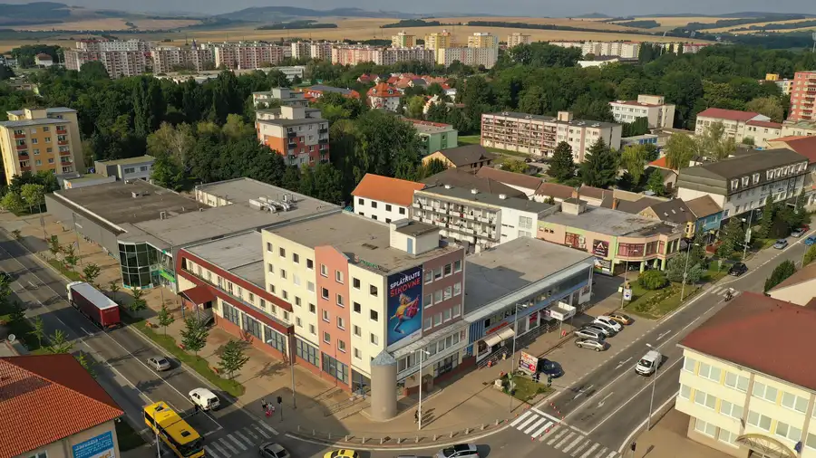
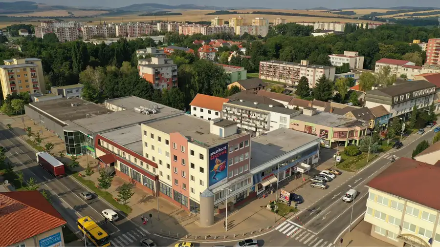
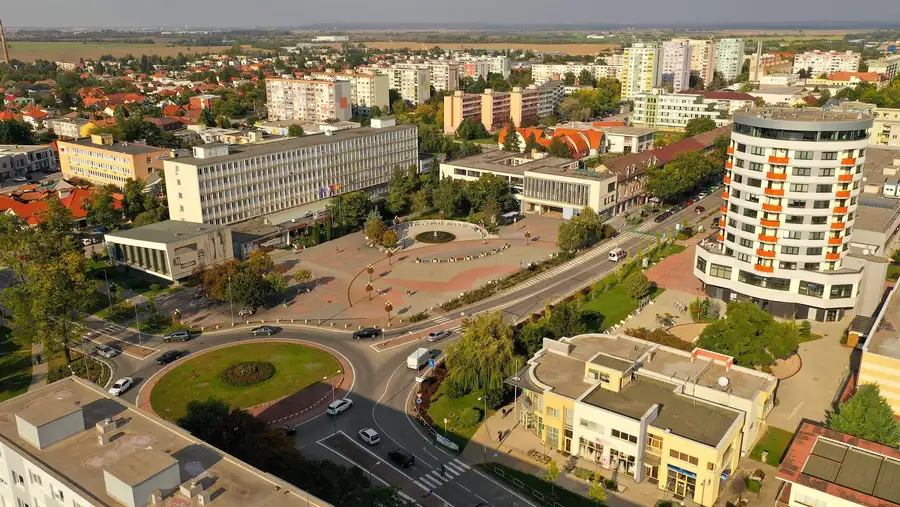

Kancelárie v priamom centre mesta Galanta, od 14m2 až po celkových 470m2
Galanta
- StavČiastočná rekonštrukcia
- VlastníctvoFiremné
O nehnuteľnosti
Spoločnosť FRANCO REAL ESTATES, ktorá je aj majiteľom budovy, Vám ponúka na prenájom kancelárske priestory v centre mesta Galanta.- BUDOVA VÚB BANKY na Mierovom námestí- Vstup do budovy možný 24/7- Veľkosť kancelárií od 13 m2, 15 m2, 35 m2 až po celkových 470 m2 kancelárskej plochy.- 1. a 2. Poschodie- Cena nájmu podľa veľkosti kancelárie je od 130,- EUR bez DPH (cena vrátane energií)- Kuchynka a Sociálne zariadenia- Možnosť prenajatia skladových priestorov v suteréne- Parkovanie verejné v okolí budovyKu každému dopytu pristupujeme osobitne a snažíme sa vyhovieť požiadavkám našich budúcich klientov.Náš regionálny manager Vám je plne k dispozícii.Regionálny manager: Peter Štrbáňkontakt: +421 910 344 967strban@francorealestates.cz
Parametre
| Druh | Kancelárie, administratívne priestory |
|---|---|
| Dátum zverejnenia | 2. 4. 2020 |
| Stav nehnuteľnosti | Čiastočná rekonštrukcia |
| Typ | Prenájom |
| Vlastníctvo | Firemné |
| Vybavenie | Pivnica |
| Úžitková plocha | 0 m² |
Kde to je


Mohlo by Vás zaujímať

Komerčné priestoryNové10 Cena dohodouSkladové priestory v centre mesta Senica Senica 175 m² Spoločnosť FRANCO REAL ESTATES, ktorá je aj majiteľom budovy, Vám ponúka na prenájom skladové priestory v centre mesta Senica.- BUDOVA VÚB BANKY na…
Komerčné priestoryNové7 Cena dohodouPrenájom od 15 m2 až po 650 m2 kancelárskej plochy v centre mesta Senica Senica Ponúkame Vám kvalitné kancelárie v priamom srdci mesta Senica. Vaše budúce kancelárie sú situované v priamom centre na Námestí Oslobodenia, v budove…
Komerčné priestoryNové9 Cena dohodouObchodný priestor v priamom centre mesta Galanta 260m2 Galanta 260 m² Spoločnosť FRANCO REAL ESTATES, ktorá je aj majiteľom budovy, Vám ponúka na prenájom obchodný priestor v centre mesta Galanta.- BUDOVA VÚB BANKY na…